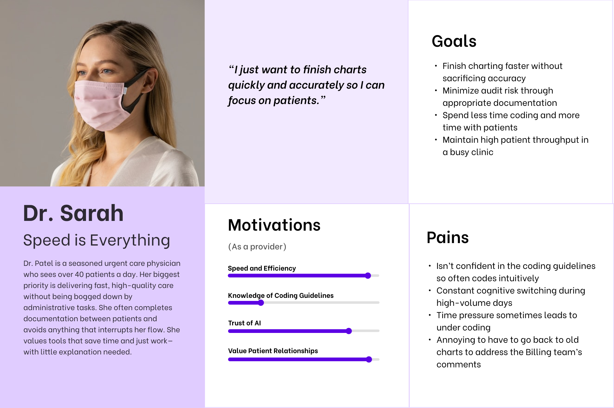
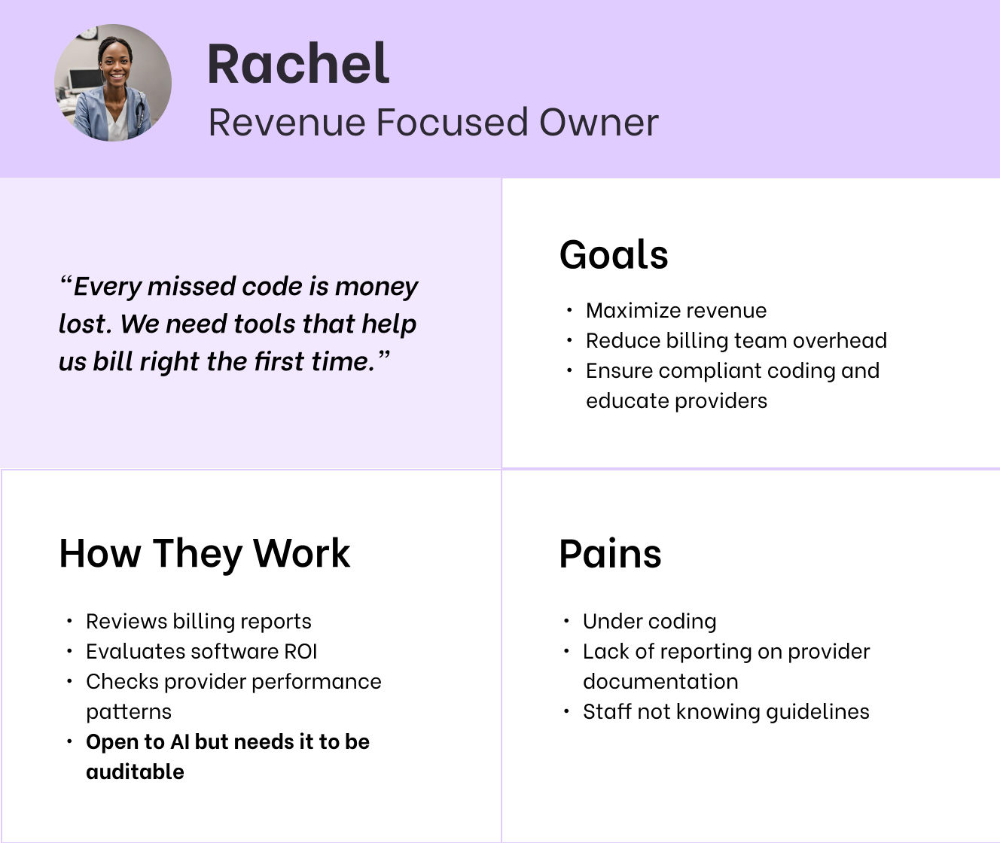
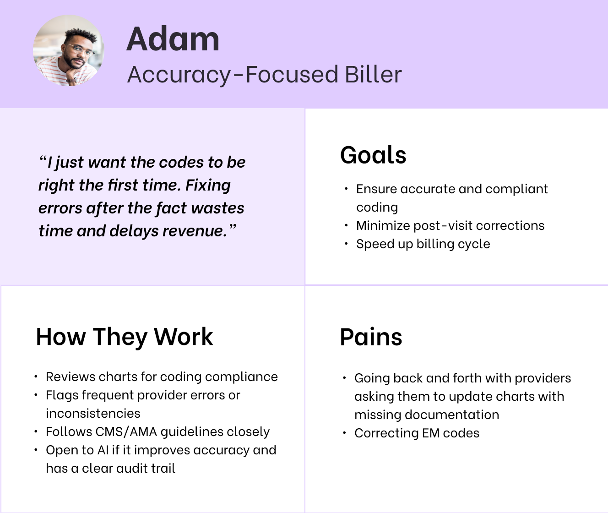

About UrgentIQ
UrgentIQ is a New York-based health tech startup founded in 2022, dedicated to transforming urgent care through intelligent, AI-powered software.
In the post-pandemic healthcare landscape, urgent care clinics have become increasingly vital, helping to ease pressure on hospitals when primary care isn't available. UrgentIQ aims to meet this need by building a modern EMR (Electronic Medical Record) system tailored specifically for the fast-paced demands of urgent care. The platform streamlines clinical documentation and reduces time spent per patient—enabling clinics to see more patients and deliver higher-quality care.
Project Background
With a lean team of just 12 employees, I joined UrgentIQ as the Product and Design Lead. Among many initiatives, I led the development of the EM Coding automation feature—leveraging AI to reduce charting time and improve coding accuracy.
What is EM Coding and Why It Matters
Evaluation and Management (E/M) coding is a standardized system used in medical documentation and billing to classify the complexity of patient visits. It determines how healthcare providers are reimbursed for services like consultations, office visits, and patient evaluations. These codes are guided by criteria set by the American Medical Association (AMA) and the Centers for Medicare & Medicaid Services (CMS), with a strong emphasis on the provider's medical decision-making (MDM).
The MDM is split into 3 components:
- The complexity of diagnoses
- Data reviewed
- The risk associated with a patient's condition
Each component gets a rating: min, low, moderate or high. Once you have 2 components you can throw out the highest value and take the next one. This goes for 3 components as well. For example, if Complexity of Diagnosis is a level 4, Risk is a level 3 and Data is a level 2, the MDM would be Level 3.
Accurate EM coding is essential not only for clinical documentation but also for ensuring proper reimbursement. For urgent care clinics—where providers see a high volume of varied cases daily—this accuracy directly impacts revenue. Undercoding can lead to lost income, while overcoding can result in audits and legal risks.
For UrgentIQ, automating and improving EM coding represented a critical opportunity: it would reduce administrative burden on providers, improve coding accuracy, and increase clinic revenue by helping ensure providers are appropriately reimbursed for the care they deliver.
My Role
As the Product and Design Lead, I was responsible for end-to-end ownership of the EM Coding feature—from initial discovery through to launch and iteration. This included:
- Collaborating closely with clinical advisors and engineers to understand the nuances of E/M guidelines and provider workflows
- Mapping out user journeys and identifying key decision points for automation
- Designing the interaction model, UI patterns, and review mechanisms for provider transparency and trust
- Facilitating design reviews, usability testing, and gathering feedback from real clinic users
- Defining success metrics and partnering with engineering to ship incrementally, balancing speed with compliance
Project Goal
Redesign the EM coding experience in UrgentIQ to reduce provider time spent in charting and reduce under coding of clinic visits.
Research
To design an EM coding assistant that providers would trust and actually use, we first needed to understand the complexities of the coding system, current documentation workflows, and real-world pain points faced by urgent care clinicians.
1. Clinical Landscape & Coding Guidelines
I began by diving into official EM coding documentation from the AMA and CMS to fully understand the components that determine code levels—especially Medical Decision-Making (MDM), which determines that final EM Code. I created documentation to explain to engineers how the EM Code is calculated based on problems addressed, data reviewed, and risk of complications. I also found that the rubric was very straightforward and the majority of E/M coding decisions could be predicted based on structured data already captured during charting.
2. Workflow Analysis with Providers
I spoke to providers using our EMR as well as clinical advisors and reviewed annotated charts to understand current pain points.
Key findings:
- Many providers defaulted to lower-level codes out of caution or time pressure
- Most providers don't understand the MDM rubric and often rely on intuition which can lead to under coding
- Critical coding elements were often buried across multiple parts of the chart (e.g., diagnosis severity, labs ordered, risk factors)
- There was a lack of real-time feedback or suggestions, making accurate coding a time-consuming, error-prone task
- Providers were open to automation, but only if they retained final control and had visibility into how the code was generated
3. Interviews with Owners and Admins
I interviewed clinic owners and admin staff to understand their pain points:
- Frequent code changes post-submission, often due to missing documentation or mismatches between clinical notes and coded level
- Strong demand for more visibility into what triggered a code level, so the provider could easily adjust or justify it
- Lack of knowledge from some providers on how coding works, making it difficult to explain why certain charts need to be up coded or down coded
- Concerned about potential revenue loss from chronic under coding by providers who don't know the MDM guidelines
4. Audit of Current Experience
We had a rudimentary coding in place that didn't take into account how codes were calculated and was confusing for users. Summary of issues with the existing coding section:
- Providers and billers must be able to update visit type to correct potential mistakes
- The visual hierarchy is problematic—since the E/M code depends on Medical Decision Making inputs, placing it at the top is counterintuitive
- The interface misleadingly suggests that E/M codes can be calculated using both Time and MDM simultaneously, when in reality it must be one or the other
- The layout suffers from inconsistent spacing
- The system requires manual E/M code calculation, despite having all the necessary MDM selections to automate this process
5. Competitive & Analogous Research
I also reviewed how other EMRs approached EM coding—ranging from simple dropdowns to rigid rules-based engines. None offered the flexibility, transparency, and intelligence we envisioned. This validated our direction to create something smarter, more context-aware, and provider-friendly.
Personas
Based on my user interviews and research I identified two types of providers for our primary user the provider.

Dr. Sarah Speed is Everything
“I just want to finish charts quickly and accurately so I can focus on patients.”
Description: Dr. Patel is a seasoned urgent care physician who sees over 40 patients a day. Her biggest priority is delivering fast, high-quality care without being bogged down by administrative tasks. She often completes documentation between patients and avoids anything that interrupts her flow. She values tools that save time and just work—with little explanation needed.
- Finish charting faster without sacrificing accuracy
- Minimize audit risk through appropriate documentation
- Spend less time coding and more time with patients
- Maintain high patient throughput in a busy clinic
- Speed and Efficiency
- Trust of AI
- Value Patient Relationships
- Isn't confident in the coding guidelines so often codes intuitively
- Constant cognitive switching during high-volume days
- Time pressure sometimes leads to under coding
- Annoying to have to go back to old charts to address the Billing team's comments
EM coding is integral for urgent care clinics so its important to note that there are 2 tertiary users also impacted by this project; the clinic owners and the clinic's billing team.


Project Team
- Product Manager
- Lead Product Designer (Me)
- Engineering Team
Tools
- Figma
- FigJam
- Notion
- ChatGPT
Research & Discovery
[Research and discovery content to be added]